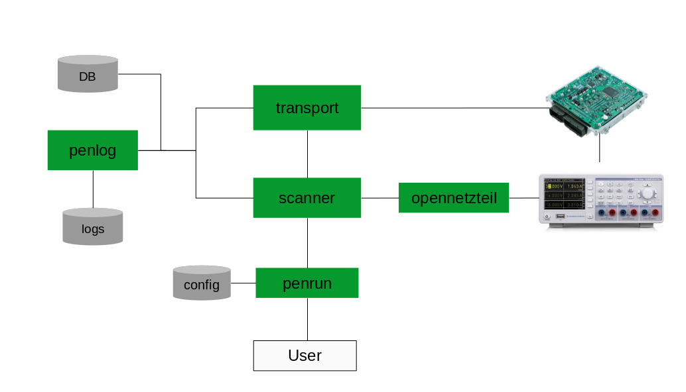

Architecture
This documentation describes the inner design concepts of gallia.
The following diagram shows the internal modules of gallia and how they are connected: 
Scanner Lifecycle
This section describes the livecycle of a scanner. Meaning, which methods are called in which order when executing a scanner.
gallia.udscan.core.GalliaBase._run()gallia.udscan.core.GalliaBase.main()
Argument Parsing
In gallia, there is a central argument parser (gallia.udscan.core.GalliaBase.parser),
where all scanner are added as sub-commands.
Scanner can add their specific options by implementing the gallia.udscan.core.GalliaBase.add_parser() method.
With this approach, we can generate a usage, which lists all installed scanners.
To see the scanner specific usage, the user can query the help of the specific sub-command.
Plugin Interface
There are different plugin interfaces to extend gallia.
All of them use the python entry point concept:
Scanner API (
gallia_scanners)ECU API (
gallia_ecus)Transport protocols (
gallia_transports)
OEM Specific Implementations
Gallia is designed with the concept of OEM/vendor specific extensions in mind.
The generic ECU class covers the basic functionality, which can be found by (almost) all OEMs.
OEM specific ECUs can extend or overwrite the generic ECU functionality.
Typical OEM specific functionality includes:
Reading properties like: software version, UUID, ECU name, …
Flashing
Security Access
Changing to vendor specific sessions